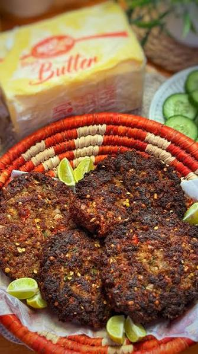

Chapli Kebab
Home

Description
This is the famous Pashtun flat kebab. It's made with minced beef or lamb, mixed with crushed coriander seeds, pomegranate seeds, tomatoes, onions, and egg. It's flattened into a patty and shallow-fried.
Ingredients
- 500g minced meat
- 1 chopped onion
- 1 chopped tomato
- 1 egg
- 3 tbsp cornstarch
- 2 tbsp coriander seeds, coarsely crushed
- 1 tbsp crushed pomegranate seeds
- 1 tbsp crushed cumin seeds
- 2 finely chopped green chillies
- Chopped coriander leaves, handful.
- 1 tbsp salt
- Oil for shallow frying
Steps
- In a large mixing bowl, combine the minced meat, chopped onion, tomato, green chilies, and fresh coriander.
- Add the crushed coriander seeds, pomegranate seeds, cumin seeds, and salt to the bowl.
- Crack the egg into the mixture and add the gram flour. Mix everything together thoroughly using your hands. Knead the mixture for about 3 to 4 minutes until it becomes sticky and holds together.
- Cover the bowl and let the mixture rest in the refrigerator for at least 30 minutes. This helps the flavors blend and makes it easier to shape.
- Take a portion of the meat mixture and shape it into a flat, round patty (about the size of your palm and half an inch thick).
- Heat a generous amount of oil or ghee in a frying pan over medium heat.
- Gently place the kebab in the hot oil and shallow fry for about 4 to 5 minutes on each side, until they are deeply browned and crispy.
- Remove from the pan and drain on a paper towel. Serve hot with naan bread, fresh salad, and a squeeze of lemon juice.